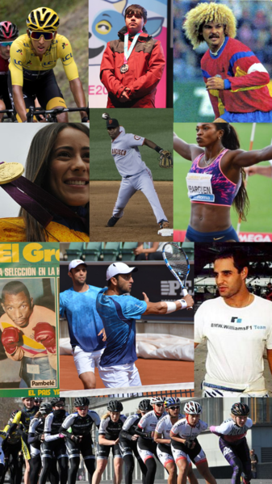

El concepto de capacidad condicional está vinculado al rendimiento físico de un individuo. Las capacidades condicionales son cualidades funcionales y energéticas desarrolladas como consecuencia de una acción motriz que se realiza de manera consciente.
Podemos decir también que las capacidades condicionales son "predisposiciones anatómica-fisiológicas innatas en el individuo, factibles de medida y mejora, que permiten el movimiento y el tono postural" (Porta,1993)
¿Cuales son?
- La fuerza.
- La resistencia.
- La flexibilidad.
- La velocidad.
Mecanismos de las capacidades condicionales
Cuando se lleva a cabo una actividad física se ejecuta una capacidad. Dichas capacidades son innatas pero pueden mejorarse a través de la adaptación física y del entrenamiento. Las capacidades condicionales son internas del organismo y están determinadas por la genética más allá de lo mencionado respecto a la posibilidad de mejoramiento. Todas las personas desarrollan de manera natural una cierta capacidad de velocidad, flexibilidad, resistencia y fuerza.
Un deportista profesional tendrá que entrenar para desarrollar al máximo estas capacidades condicionales de acuerdo a su disciplina debiendo realizar ejercicios específicos. A modo de ejemplo para un maratonista es esencial la resistencia, un atleta que busca destacarse en carreras de 100 metros tendrá que trabajar en su velocidad, por otra parte la flexibilidad es clave para un gimnasta pero para un levantador de pesas resultará más importante el desarrollo de su fuerza.

Foto disponible en Wikimedia Commons
{kind=link}